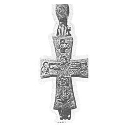

Catalog › CE-0133 · KHA1900-268b
Encolpion de argint gravat și nielat, cu Răstignirea și Maica Domnului pe revers
XII–XIII в. (1101–1300) · loc necunoscut
double-sided reliquary cross (enkolpion), argint; XII–XIII в. (1101–1300); find spot unknown.


Identificare
- Categorie
- Encolpion bivalv (relicvar)
- Material
- Argint
- Tehnică
- Gravare (incizie); Niello
Iconografie
- Descriere avers
- Pe față, Răstignirea, cu inscripția ІС ХС deasupra capului Mântuitorului; la dreapta Maica Domnului cu inscripție, la stânga Ioan Teologul cu inscripție.
- Revers
- Maica Domnului Orantă
- Descriere revers
- Pe revers, Maica Domnului în picioare, cu inscripție pe laturi; pe laturi, în medalioane, patru ierarhi.
- Inscripții
- față: ІС ХС; МР ΘΥ; ІОАНН; revers: МР ΘΥ
Datare și atribuire
- Datare
- XII–XIII в. (1101–1300)
- Centru
- Necunoscut
Descoperire
- Context
- Colecție (fără context)
Păstrare și referințe
- Nr. inventar
- Leopardov, seria II, fasc. I, nr. 5
- Bibliografie
- B. I. și V. N. Khanenko, Древности русскія. Кресты и образки, вып. II (Собраніе Б. И. и В. Н. Ханенко), Kiev, 1900 [Khanenko 1900], cat. nr. 268–269 б., Tabl. XXIII, reprodusă la Табл. XXIII, fig. 268/269 б. (planșa de la p. 26 a PDF-ului).
- Figura
- Табл. XXIII, fig. 268/269 б.
- Planșe
- Khanenko 1900, Табл. XXIII (planșă fără paginație tipărită; p. 26 în PDF)
- Observații
- Datare după Khanenko: XII–XIII в. Gravură mai ales cu înnegrire (niello). Descris sub nr. 5 în culegerea lui Leopardov, seria II, fasc. I. Numerotarea din sursă este „268—269 б.”. Inscripțiile sunt date în sursă în caractere decorative; aici în formă normalizată. Nu se indică locul de descoperire. Coordonate: nu sunt date în sursă.
Citare: Corpus Encolpiorum, CE-0133, Encolpion de argint gravat și nielat, cu Răstignirea și Maica Domnului pe revers, --root/piese/KHA1900-268b/ (accesat 2026-10-17).